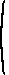
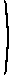

1.2 Matrices: determinant, inverse, and rank
Transpose
- Definition
- Let A be an n × m matrix (i.e. a matrix with n rows and m columns). The transpose A' of A is the m × n matrix in which, for i = 1, ..., m, the ith row is the ith column of A.
Determinant
An important characteristic of a square matrix (a matrix with the same number of rows as columns) is its “determinant”. We can conveniently define the determinant of a matrix inductively, in terms of the determinants of smaller matrices.- Definition
-
The determinant of a 1 × 1 matrix is the single number in the matrix. For any n ≥ 2, the determinant of the n × n matrix A is
|A| = ∑nwhere a1j is the number in the first row and jth column of A and A1j is the n − 1 × n − 1 matrix obtained by deleting the first row and jth column of A.
j=1(−1)1+ja1j|A1j|
| |A| | = | a11|A11| − a12|A12| + a13|A13| − ... + (−1)1+na1n|A1n|. |
To use the definition to find the determinant of an n × n matrix, you first write down the expression it gives for the determinant as a sum of the determinants of a collection of n − 1 × n − 1 matrices. Then, for each of these determinants, you substitute the expression the definition gives as a sum of the determinants of a collection of n − 2 × n − 2 matrices. You continue in the same way until you get to an expression involving the determinants of a collection of 1 × 1 matrices, which the definition says are simply the single elements of the matrices. If n is bigger than 3, this process will involve a lot of bytes (or paper). But in principle it is possible. The following examples illustrate it.
- Example 1.2.1
-
Let A be the 2 × 2 matrix
The matrix A11 is the 1 × 1 matrix consisting of the number d and the matrix A12 is the 1 × 1 matrix consisting of the number c. Thus using the expression in the definition, the determinant of A is ad − bc.

a b 
c d .
- Example 1.2.2
-
Let A be the 3 × 3 matrix
The matrix A11 is the 2 × 2 matrix
 a b c  d e f g h i . whose determinant is ei − fh. Similarly |A12| = di − fg and A13 = dh − eg. Thus using the expression in the definition, the determinant of A ise f h i , a(ei − fh) − b(di − fg) + c(dh − eg).
- Proposition 1.2.1
-
The determinant of the n × n matrix A is equal to
∑nfor any i = 1, ..., n and is also equal to
j=1(−1)i+jaij|Aij|∑nfor any j = 1, ..., n, where Aij is the matrix obtained by deleting the ith row and jth column of A.
i=1(−1)i+jaij|Aij|
- Source
- For a proof, see Simon and Blume (1994), Theorem 26.1 on p. 743.
Notice that, as in the original definition, the coefficients (−1)i+j in each of these sums alternate in sign. Notice also that the sign of the first term in either sum is positive if the exponent of −1 in that term is even and negative if the exponent is odd. In particular, it is not always positive. For example, the coefficient (−1)i+1 of the first term in the first sum is negative if i is even.
The first expression in the proposition is called the expansion along the ith row of the matrix; the second expression is called the expansion along the jth column of the matrix.
The next example verifies the proposition for an arbitrary 3 × 3 matrix.- Example 1.2.3
-
Let A be a 3 × 3 matrix; denote its elements as in an earlier example (to avoid a dizzying collection of subscripts). The first sum in the proposition is
−a21|A21| + a22|A22| − a23|A23| = −d(bi − ch) + e(ai − cg) − f(ah − bg)for i = 2 anda31|A31| − a32|A32| + a33|A33| = g(bf − ce) − h(af − cd) + i(ae − bd)for i = 3, both of which are equal to the value of |A| calculated in the earlier example. The second sum in the proposition isa11|A11| − a21|A21| + a31|A31| = a(ei − fh) − d(bi − ch) + g(bf − ce)for j = 1,−a12|A12| + a22|A22| − a32|A32| = −b(di − fg) + e(ai − cg) − h(af − cd)for j = 2 anda13|A13| − a23|A23| + a33|A33| = c(dh − eg) − f(ah − bg) + i(ae − bd)for j = 3, all of which are equal to the value of |A| calculated in the earlier example.
- Example 1.2.4
- Let A be an n × n matrix in which all the elements are zero except the ones on the “main diagonal”—that is, the elements akk in the kth row and kth column for k = 1, ..., n. Applying the definition, the determinant of A is simply a11 times the determinant of the matrix obtained by deleting the first row and first column of A (because all the other elements in the first row of A are zero). This latter matrix has the same structure as A, and its determinant is a22 times the determinant of the matrix obtained by deleting the first two rows and first two columns of A. Proceeding in the same way, we see that the determinant of A is a11a22···ann, the product of all the elements on the main diagonal of the matrix (the only positive elements in the matrix).
Inverse
- Definition
- The square matrix is nonsingular if its determinant is not zero.
- Example 1.2.5
-
The determinant of the matrix
is ad − bc by an earlier example. Thus the matrix is nonsingular if ad − bc ≠ 0.
a b c d
- Definition
-
Let A be an n × n matrix. If there is an n × n matrix B such that
BA = AB = I,where I is the n × n identity matrix (in which every entry on the main diagonal is 1 and all other entries are 0), then B is an inverse of A, denoted A−1.
- Proposition 1.2.2
- A square (n × n) matrix has at most one inverse.
- Proof
- Let A be a n × n matrix, and suppose that B and C are both inverses of A. Then by the definition of an inverse, BA = AB = I and CA = AC = I, where I is the n × n identity matrix. Thus C = CI = C(AB) = (CA)B = IB = B, so that C and B are the same.
- Proposition 1.2.3
- A matrix has an inverse if and only if it is nonsingular.
- Source
- For a proof, see Simon and Blume (1994), Theorem 26.3 on p. 732.
- Proposition 1.2.4
-
The inverse of the nonsingular n × n matrix A is the n × n matrix for which the (i,j)th component is
(−1)i+j|Aji|/|A|,where Aji is the matrix obtained by deleting the jth row and ith column of A.
- Source
- For a proof, see Simon and Blume (1994), Theorem 26.7 (which follows from Theorem 26.6) on p. 736.
- Example 1.2.6
-
For the 2 × 2 matrix
we have |A11| = d, |A12| = c, |A21| = b, and |A22| = a, and the determinant is ad − bc. Thus if ad − bc ≠ 0 then the inverse of A is
A = a b c d (You can check that the product of the matrix and its inverse is the identity matrix.)1 ad − bc d −b −c a .
- Example 1.2.7
-
The inverse of the matrix
is
A = a b c d e f g h i if |A| ≠ 0. We have |A11| = ei − fh, |A21| = bi − ch, |A31| = bf − ce, |A12| = di − fg, |A22| = ai − cg, |A32| = af − cd, |A13| = dh − eg, |A23| = ah − bg, and |A33| = ae − bd. (Again, you can check that the product of the matrix and its inverse is the identity matrix.)1 |A| |A11| −|A21| |A31| −|A12| |A22| −|A32| |A13| −|A23| |A33|
Rank
The “rank” of a matrix is usually defined as the maximal number of linearly independent column vectors in the matrix. But to give this definition, I would need to define the concept of linear independence, which is not otherwise needed in this tutorial. So instead I give a definition that uses only concepts defined so far. (This definition is usually given as a result, following a definition in terms of linear independence.) Note that the matrix in the definition is not required to be square.- Definition
- The rank of a matrix A is the number of rows and columns in the largest square matrix obtained by deleting rows and columns of A that has a determinant different from 0.
- Example 1.2.8
-
The rank of the matrix
is 1 because the determinant of the matrix is 0 and the determinant of the 1 × 1 matrix obtained by deleting the second row and second column is 1 ≠ 0.
1 0 1 0
- Example 1.2.9
-
The rank of the matrix
is 2 because the determinant of the matrix obtained by deleting the last column (i.e. all but the first two rows and columns) is 2 ≠ 0.
1 0 2 0 2 4